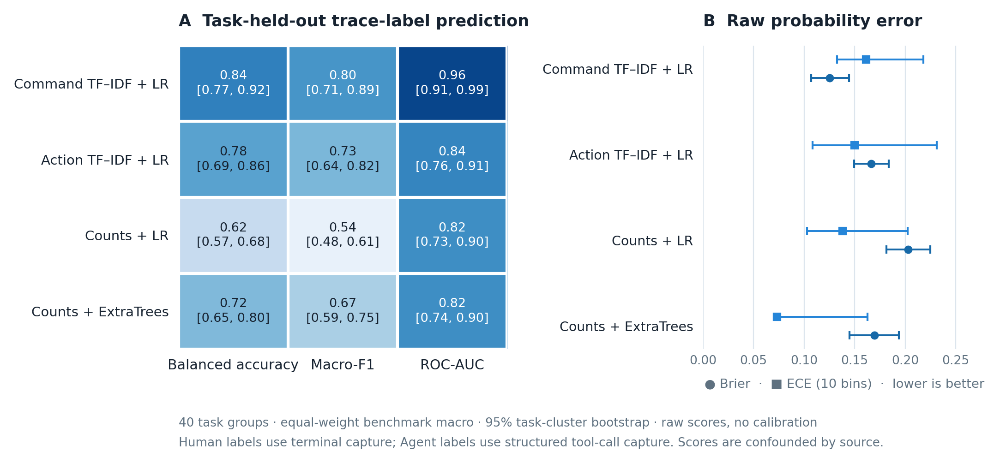

本地 Human / Agent 识别
使用采集格式匹配的标注轨迹，从命令和动作中识别执行方式。
local_mode_detector
用带标签的轨迹训练，再为同一采集格式的无标签轨迹评分。当前实现使用命令与粗粒度动作的 unigram/bigram TF‑IDF，并训练类别平衡的逻辑回归。
Python API
Python API训练与识别from attackagent import fit_detector, predict_modes
# training_records: labeled Human/Agent traces in one source format
detector = fit_detector(training_records)
scores = predict_modes(detector, unlabeled_traces)
for score in scores:
print(score.trace_id, score.prediction, score.agent_like_score, score.available)训练集至少需要 8 条轨迹，包含 Human 与 Agent 两类，且 `source_format` 必须一致。预测返回类别标签和原始 `agent_like_score`；该分数未经校准。格式不匹配或没有已学习词项时返回 `unknown`。
本地基线测到了什么
在固定公开轨迹集上，仅用命令名称的 TF‑IDF + Logistic Regression 达到 84.4% 任务宏平均平衡准确率（95% 任务簇区间 76.6%–91.5%），ROC-AUC 为 95.7%。图中另列三种本地基线。

84.4% 对应的是“仅命令”对照模型，不是库 API 当前“命令 + 动作”实现的直接性能估计。
该版本中的 Human 标签来自终端采集，Agent 标签来自结构化工具调用；标签与采集方式完全绑定。因此结果衡量的是对这批轨迹标签的预测，不是排除了接口影响后的执行者识别。数据也没有 Script 轨迹或真实攻击活动标签。